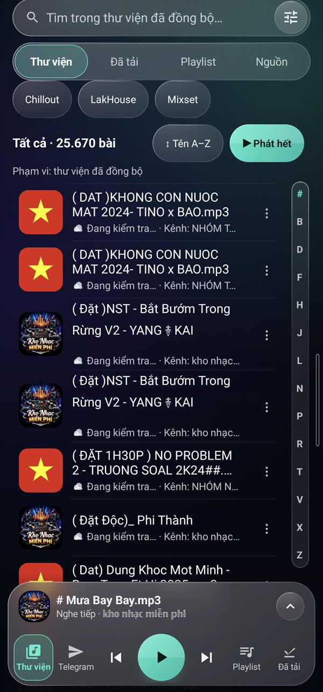
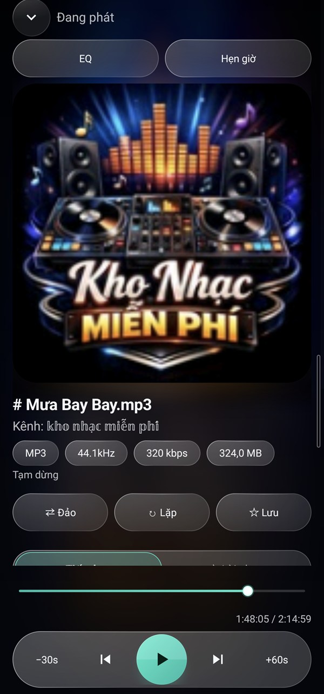
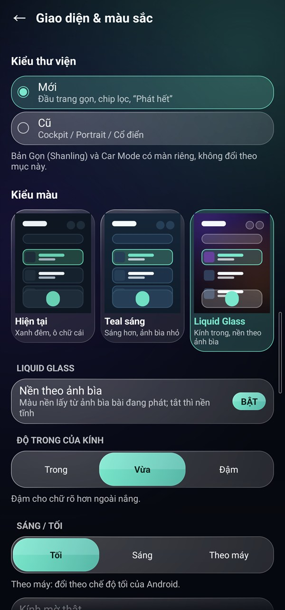
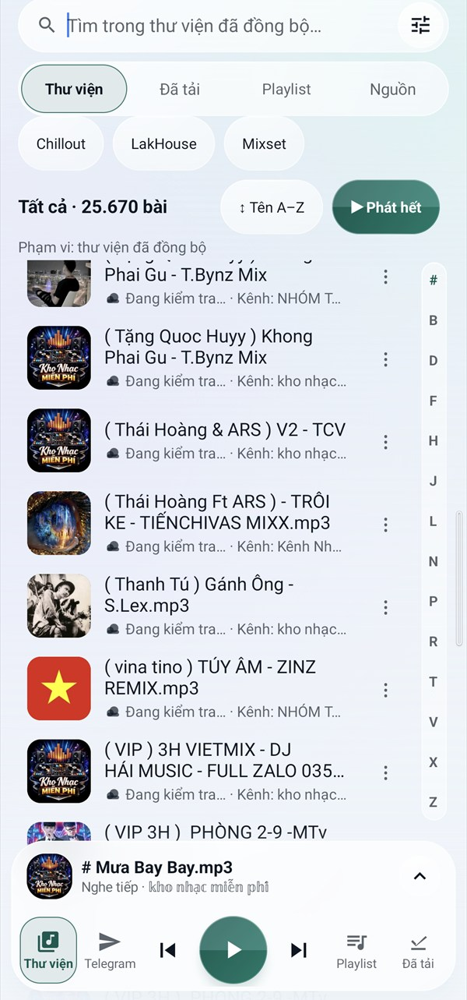
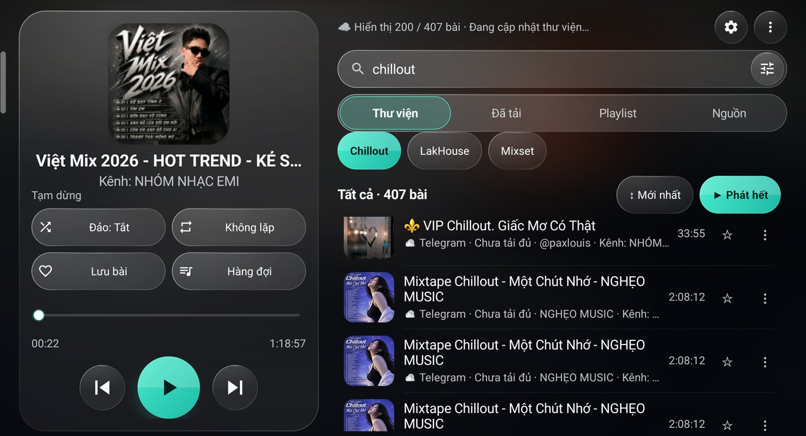
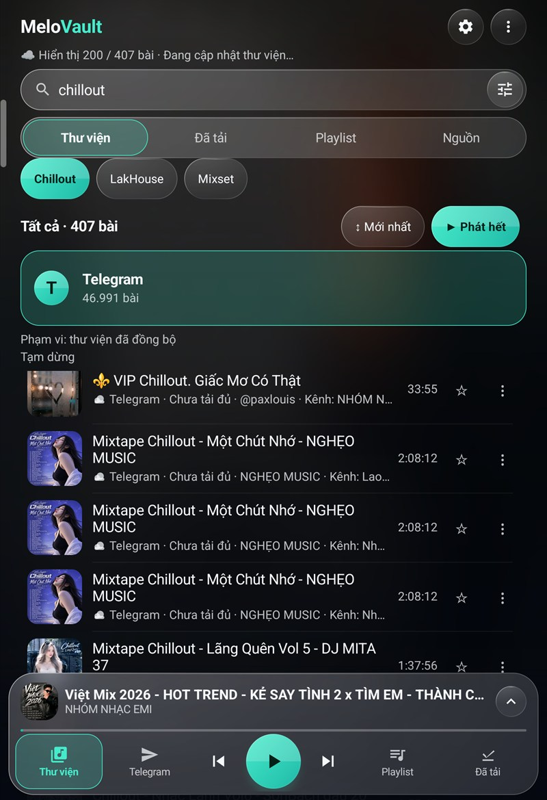
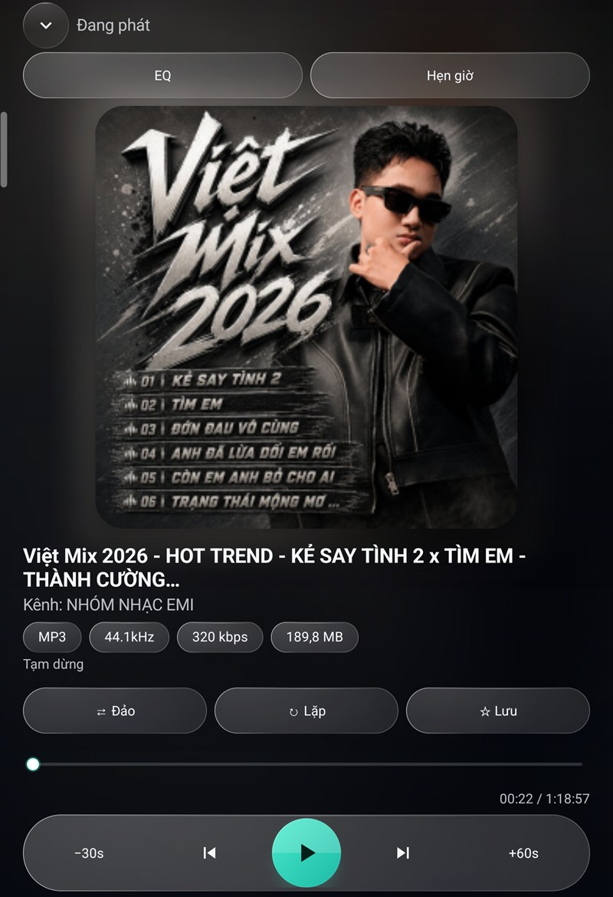

Thư viện từ Telegram
Duyệt nhạc từ tài khoản Telegram của bạn, với các nguồn như Tin đã lưu, nhóm và kênh.
Ứng dụng Android · Bản thử nghiệm
MeloVault giúp bạn duyệt và nghe nhạc từ tài khoản Telegram của mình, tìm bài nhanh và mở nhạc có sẵn trên máy.
Bản thử nghiệm đang được hoàn thiện. Trải nghiệm có thể khác nhau giữa các thiết bị. MeloVault là ứng dụng không chính thức, dùng Telegram API. Không liên kết với Telegram.


01 / KHÁM PHÁ
Duyệt nhạc từ tài khoản Telegram của bạn, với các nguồn như Tin đã lưu, nhóm và kênh.
Tìm bài bằng từ khóa không dấu; chọn Mới nhất hoặc Tên A–Z. Thanh chữ cái có trên giao diện Điện thoại, Tablet và Hai khung.
Mở mục Nhạc trên máy hoặc chọn Mở tệp nhạc để nghe tệp có sẵn trên thiết bị. Bài đã tải đủ nghe được khi không có mạng.
Bấm Nghe tiếp cho bài Telegram gần đây: bài đã tải đủ tiếp tục từ vị trí cũ, bài chưa tải bắt đầu từ đầu. App không tự phát khi mở.
Mục Video gom video nhạc và phim từ các kênh của bạn: xem ngay khi đang tải, toàn màn, hình trong hình, tải về máy. Lọc Nhạc / Phim / Khác và theo độ dài.
Nghe tiếng của video nhạc như một bài hát, cả khi tắt màn hình; nghe cả danh sách video.
Tab Nguồn tự tìm mọi nhóm, kênh có video và ghi số video thật.
Thêm số khác trong Cài đặt › Tài khoản; chạm vòng chữ cái ở đầu màn để chuyển.
Giao diện kính đổi màu theo ảnh bìa (mặc định); EQ trên màn Đang phát; widget Đang phát ở màn hình chính.
App tự báo khi có bản mới, tối đa 1 lần mỗi ngày, chỉ tải khi bạn đồng ý.
Một số bố cục và thao tác vẫn cần được kiểm thử thêm trên thiết bị thực tế. Xem từng bản ở Nhật ký cập nhật ›
02 / GIAO DIỆN
Ảnh chụp màn hình thật trên thiết bị đang dùng thử, với giao diện Liquid Glass. Thanh trạng thái và thanh điều hướng của Android đã được cắt bỏ; nội dung trong app là thư viện Telegram của người dùng thử.





03 / BẢN THỬ NGHIỆM
APK MeloVault cho Android, ai cũng có thể tải về dùng thử.
Liên kết và thông tin bản tải sẽ xuất hiện tại đây khi sẵn sàng.
Chưa công bốChưa công bố
Đây là bản thử nghiệm, chưa phải bản ổn định. Từ 0.6.98, MeloVault ký bằng khóa phát hành chính thức: nếu máy đang có bản 0.6.97, bạn phải gỡ bản đó rồi cài bản mới (chỉ một lần); việc gỡ làm mất danh sách phát, yêu thích, cài đặt và phiên đăng nhập Telegram trong app. Các bản sau cài đè được. Liên kết tải mở GitHub.
04 / NHẬT KÝ CẬP NHẬT
Thay đổi của từng bản, mới nhất ở trên. Bản mới tự báo trong app (Cài đặt › Giới thiệu › Cập nhật ứng dụng).
Nhật ký cập nhật cần JavaScript. Xem đầy đủ ở trang Releases trên GitHub.
05 / BẮT ĐẦU
Tải APK từ nút Tải APK trên trang này khi bản test đã được phát hành.
Mở tệp vừa tải. Nếu Android yêu cầu, bật ‘Cài từ nguồn không xác định’ hoặc ‘Cho phép từ nguồn này’ cho trình duyệt hay trình quản lý tệp đang mở APK. Tên mục có thể khác theo máy.
Đang có bản 0.6.97: gỡ MeloVault trước rồi mới cài bản mới (chỉ lần này, vì đổi sang khóa ký chính thức). Gỡ app sẽ mất danh sách phát, yêu thích, cài đặt và phiên đăng nhập Telegram trong app; nhạc trên Telegram không bị ảnh hưởng.
Đang có bản 0.6.98 trở lên: chọn cài đè/cập nhật, không gỡ app và không xóa dữ liệu ứng dụng. Nếu máy báo xung đột chữ ký, không cài được hoặc bản cài cũ hơn, hãy dừng và báo người phụ trách test.
Mở MeloVault và làm theo hướng dẫn trong ứng dụng. Để nghe nhạc Telegram, đăng nhập tài khoản của bạn trong app. Có thể tắt lại quyền cài từ nguồn này sau khi cài xong. Khi app hỏi quyền cài bản cập nhật, cho phép MeloVault trong ‘Cài ứng dụng không rõ nguồn’.
06 / CÙNG HOÀN THIỆN
Sao chép mẫu dưới đây và gửi qua nơi bạn nhận lời mời test. Trang này không tự gửi báo cáo.
Không gửi mã đăng nhập, mật khẩu, số điện thoại, tên chat/kênh thật hoặc log chưa kiểm tra. Nếu đính kèm ảnh, hãy che toàn bộ dữ liệu cá nhân.
07 / GIẢI ĐÁP
Ứng dụng dành cho Android; tài liệu hiện ghi mức tối thiểu Android 8.0. Khả năng hoạt động của từng thiết bị cần được kiểm thử.
Có, nếu muốn nghe nhạc từ Telegram. Ứng dụng cũng có mục Nhạc trên máy và Mở tệp nhạc.
Có với bài đã tải đủ và còn trên thiết bị. Bài chưa tải cần kết nối mạng; không phải mọi bài trong thư viện đều đã sẵn sàng nghe offline.
Từ bản 0.6.98, MeloVault tự báo khi có bản mới (Cài đặt → Giới thiệu → Cập nhật ứng dụng). Bản 0.6.97 cần tải tay một lần: vì 0.6.98 ký bằng khóa phát hành chính thức, hãy gỡ 0.6.97 rồi cài 0.6.98 (mất dữ liệu trong app). Các bản sau 0.6.98 cài đè hoặc cập nhật ngay trong app, không cần gỡ.
Bản test có thể đang chờ phát hành. Khi có bản tải hợp lệ, nút Tải APK sẽ được bật.
Đã có bộ chỉnh âm (EQ) trên màn Đang phát. Nhạc từ Drive/OneDrive chưa có.
Không. MeloVault là ứng dụng không chính thức, dùng Telegram API để đọc nhạc từ tài khoản của bạn. Không liên kết với Telegram.
THÔNG TIN CỦA BẠN
Trang giới thiệu này không yêu cầu đăng nhập Telegram, không thu thập báo cáo tự động và không dùng công cụ theo dõi.
Ứng dụng dùng tài khoản Telegram của bạn để truy cập nguồn nhạc; dữ liệu phiên, chỉ mục và tệp đã tải được xử lý trên thiết bị. Kết nối Telegram và dịch vụ lưu trữ APK chịu chính sách của các dịch vụ tương ứng.
Lời nhạc từ LRCLIB chỉ chạy khi bạn đồng ý (ở tab Lời nhạc hoặc trong Cài đặt). Khi đó app gửi tên bài, ca sĩ, album và thời lượng của bài đang nghe tới LRCLIB (lrclib.net) để tìm lời; có thể tắt lại trong Cài đặt.
Bản này tự kiểm tra bản mới, tối đa 1 lần mỗi ngày, và tải bản cập nhật khi bạn đồng ý. Yêu cầu không chứa thông tin tài khoản hay thư viện nhạc; máy chủ phát hành có thể ghi địa chỉ IP theo chính sách của họ. Tắt được trong Giới thiệu.
Trang được lưu trữ trên Cloudflare Pages (bản sao trên GitHub Pages); nhà cung cấp có thể ghi nhật ký truy cập kỹ thuật như địa chỉ IP theo chính sách của họ.
Không nhập mã đăng nhập hay mật khẩu Telegram trên trang web này. Chỉ chia sẻ thông tin lỗi đã loại bỏ dữ liệu riêng tư.